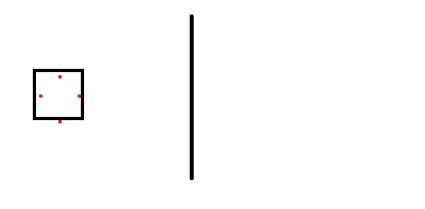

All you have to do is open the patch LevelExtend.asm, change the defines if necessary, then use Asar to patch it into your game.
However, if you are here just to understand how this patch works, well it works like this towards the player (going past the right edge of the level with
the level border represented as a black vertical line, with “Disable Screen Barrier via RAM” patch installed):
The green box is the “actual” player position. The dots in the black box represent the collision points, the way how SMW
detects collision with objects is by checking if a given point is in one of the squares of the 16x16 grid. When the player's body goes past the level border,
it will be clamped along the border of the level. All collision points will stop together if his position ($7E0094 and $7E0096
happens to be out of bounds.
For sprites, it is the same, but the collision points are stopped individually (all collision points will stop at the same X or Y position as the line rather than stopping
all of them at their current position when one is at the border). Why? Well it is because not all sprites have the same object collision positions and all of them will have
way more collision fields than the player. If it was similar to the player, big sprites may interact with a line of blocks (both horizontal and vertical) that are
not at the level edge:
